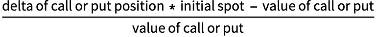

Leverage Ratios
Why do we need leverage ratios?
If you purchase $100.000 of a stock trading at $100.00 and the stock rises to $120.00, you’ve made a return of 20%.
Another way of arriving at this result is by using the delta as follows:
1. Calculate how many units you have: $100.000/$100 = 1000
2. Calculate the net delta: 1000 x 1 (stocks have a delta of 1)
3. Calculate the increase of the position due to deltas: (120-100)*1000 = $20.000
4. Calculate the returns: $120.000/$100.000 - 1 = 20%
Let’s now do the same for a deep in the money call, with a delta of 0.90 with a price of $16
1. Calculate how many units you have: $100.000/$16 = 6250
2. Calculate the net delta: 6250*0.9 = 5625
3. Calculate the increase of the position due to deltas = (120-100)*5625 = $112.500
4. Calculate the returns: ($100.000 + $112.500)/$100.000 = 112.5%
How to calculate leverage ratios
As you might have noticed, two positions with the same cash allocation resulted in very different returns.
The leverage ratio helps us understand this difference and is calculated in two different ways:
net delta of call or put position / net delta of stock position - 1
or

Which for this example yields:
1. net delta of call position = 5625
2. net delta of stock position = 1000
3. Result = 4.625